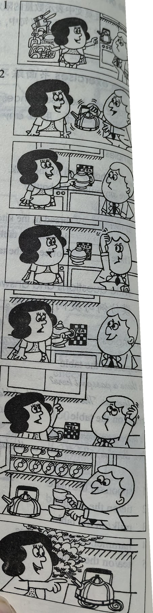

Lesson content · 课文
Lesson 43: Hurry up! · 快点！
Listen then answer this question. 听录音，然后回答问题。
How do you know Sam doesn’t make the tea very often?
你怎么知道萨姆不常沏茶？
PENNY: Can you make the tea, Sam?
SAM: Yes, of course I can, Penny.
SAM: Is there any water in this kettle?
PENNY: Yes, there is.
SAM: Where’s the tea?
PENNY: It’s over there, behind the teapot.
PENNY: Can you see it?
SAM: I can see the teapot, but I can’t see the tea.
PENNY: There it is! It’s in front of you!
SAM: Ah yes, I can see it now.
SAM: Where are the cups?
PENNY: There are some in the cupboard.
PENNY: Can you find them?
SAM: Yes. Here they are.
PENNY: Hurry up, Sam! The kettle’s boiling!

New words and expressions · 生词和短语
| Word · 单词 | Pronunciation · 音标 | Meaning · 词义 |
|---|---|---|
| of course | /əv ˈkɔːs/ | 当然 |
| kettle | /ˈketl/ | n. 水壶 |
| behind | /bɪˈhaɪnd/ | prep. 在……后面 |
| teapot | /ˈtiːpɒt/ | n. 茶壶 |
| now | /naʊ/ | adv. 现在，此刻 |
| find | /faɪnd/ | v. 找到 |
| boil | /bɔɪl/ | v. 沸腾，烧开 |
Notes on the text · 课文注释
- make the tea，沏茶。
- over there 是指“在那边”，指比较远的地方。
- 在 There are some in the cupboard 中，some 是代词，指 some cups。
- hurry up，赶快，在祈使语气中用来催促他人。
Chinese translation · 参考译文
彭妮：你会沏茶吗，萨姆？
萨姆：会的，我当然会，彭妮。
萨姆：这水壶里有水吗？
彭妮：有水。
萨姆：茶叶在哪儿？
彭妮：就在那儿，茶壶后面。
彭妮：你看见了吗？
萨姆：茶壶我看见了，但茶叶没看到。
彭妮：那不是吗！就在你眼前。
萨姆：噢，是啊，我现在看到了。
萨姆：茶杯在哪儿呢？
彭妮：碗橱里有几只。
彭妮：你找得到吗？
萨姆：找得到。就在这儿呢。
彭妮：快，萨姆！水开了！
Practice · 课文练习
Understand the lesson · 课文理解
Comprehension · 理解题
Answer the question about the lesson text. 根据课文回答问题。
-
comprehension: Comprehension · 理解题 — How do you know Sam doesn’t make the tea very often?
Practice worksheet · 配套练习
A. Dialogue
Read this dialogue. Fill in the missing words. 填空。
-
worksheet: A. Dialogue — Sam: Is there ____ water in this kettle, Penny?
Penny: Yes, ____ is. And the tea’s ____ there, ____ the teapot. Can you ____ it?
Sam: Yes, and here’s the tea. ____ are the cups?
Penny: There ____ some in the cupboard. ____ you find ____?
Sam: Yes. ____ they are.
Penny: Hurry ____, Sam! The kettle’s ____!
B. Vocabulary
Sort these things into rooms: a kettle, a teapot, a refrigerator, a wardrobe, a television, cups, books, an electric cooker, dishes, a bookcase, taps, clothes, spoons, armchairs, beds, a dressing table, plates, knives, forks. 将方框中的单词按所在房间分类排列。
-
worksheet: B. Vocabulary — The kitchen
-
worksheet: B. Vocabulary — The living room
-
worksheet: B. Vocabulary — The bedroom
C. Numbers
Write these numbers in words. 用英语数词表示以下数字。
Example · 例句
75 → seventy-five
-
worksheet: C. Numbers — 97
-
worksheet: C. Numbers — 81
-
worksheet: C. Numbers — 101
Grammar practice · 语法练习
I. Make sentences according to the example
- 1. pens on the table
ink in the bottle
There are some pens on the table.
There is some ink in the bottle.
- 2. pencils on the desk
paper on the shelf - 3. cups in the cupboard
coffee in the cup - 4. knives in the box
cheese on the plate - 5. cigarettes in his pocket
tobacco in the tin - 6. glasses on the table
beer in the glass - 7. books in the bookcase
bread on the table - 8. eggs on the plate
tea in the teapot
II. Ask and answer questions according to the example
- 1. magazines on the shelf
butter on the plate
Are there any magazines on the shelf?
No, there aren't any magazines on the shelf.
Is there any butter on the plate?
No, there isn't any butter on the plate.
- 2. birds in the tree
paper on the desk - 3. shoes under the bed
clothes on the bed - 4. boys in the school
tea in the teapot - 5. glasses on the table
water in the glass - 6. kettles in the shop
milk in the bottle
III. Make sentences according to the example
- 1. two spoons on the plate
two cups of tea on the table
There are two spoons on the plate.
There are two cups of tea on the table.
- 2. three hundred pages in the book
two pieces of paper on the desk - 3. twenty watches in the box
two pieces of chocolate in the box - 4. five knives in the cupboard
two loaves of bread in the bag - 5. six men in the office
twelve bars of chocolate on the table - 6. three dogs in the garden
ten slices of bread on the plate - 7. two mechanics in the room
three bottles of beer on the table - 8. thirty boxes in the shop
six hundred bars of soap in the boxes
Your notes and answers
Use this space for longer responses or exercises that do not have an individual answer box.